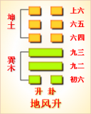

<!DOCTYPE html PUBLIC "-//W3C//DTD XHTML 1.0 Transitional//EN" "http://www.w3.org/TR/xhtml1/DTD/xhtml1-transitional.dtd">

<html xmlns="http://www.w3.org/1999/xhtml">
<head>
<meta content="text/html; charset=utf-8" http-equiv="Content-Type"/>
<title>周易第四十六卦：升卦 地风�?坤上巽下原文解释翻译-周易-国学�?/title>
<meta content="周易,升卦,地风�?坤上巽下" name="keywords"/>
<meta content="周易,升卦,地风�?坤上巽下，周易第四十六卦：升�?地风�?坤上巽下解释翻译�?（地风升）坤上巽�?《升》：元亨。用见大人，勿恤。南征吉�?初六，允升，大吉�?九二，孚乃利用禴，无咎�?九三，升虚邑�?六四，王用亨于岐山，吉，无咎�?六五，贞吉，升阶" name="description"/>
<link href="css.css" media="screen" rel="stylesheet" type="text/css"/>
</head>
<body>
<div class="gxlayout">
</div>
<div class="gxlayout">
<div class="ihead">
<div class="title"><a>周易</a></div>
<ul class="more fl">
<li>当前位置:<a>国学梦首�?/a> &gt; <a>国学经典</a> &gt; <a>经部</a> &gt; <a>四书五经</a> &gt; <a>周易</a> &gt;  周易第四十六卦：升卦 地风�?坤上巽下原文解释翻译</li>
</ul>
</div>
<div class="gxbl fl">
<div class="latitle">

<h1>周易第四十六卦：升卦 地风�?坤上巽下</h1>
<div class="lainfo"><span>作者：佚名</span> <span>全集�?a>周易</a></span> <span>来源：网�?/span> <span>[<a rel="nofollow" target="_blank">挑错/完善</a>]</span></div>
</div>
<div class="lacontent">
<div class="clearfix"></div>
<!--<!-- allowfullscreen="" frameborder="0" height="36" src="http://www.ximalaya.com/swf/sound/yellow.swf?id=1382609&amp;auto=true" width="260"></iframe>-->
<p style="text-align:center"></p>
<p style="text-align:center"><a>周易第四十六卦详�?/a></p>
<p style="text-align:center"><a>第四十六卦初六爻详解</a>　<a>第四十六卦九二爻详解</a>　<a>第四十六卦九三爻详解</a></p>
<p style="text-align:center"><a>第四十六卦六四爻详解</a>　<a>第四十六卦六五爻详解</a>　<a>第四十六卦上六爻详解</a></p>
<p><strong><a target="_blank">周易</a>第四十六�?�?地风�?坤上巽下</strong></p>
<p>升：元亨，用见大人，勿恤，南征吉�?/p>
<p>彖曰：柔以时升，巽而顺，刚中而应，是以大亨。用见大人，勿恤;有庆也。南征吉，志行也�?/p>
<p>象曰：地中生木，�?君子以顺德，积小以高大�?/p>
<p>初六：允升，大吉。象曰：允升�?吉，上合志也�?/p>
<p>九二：孚乃利用禴，无咎。象曰：九二之孚，有喜也�?/p>
<p>九三：升虚邑。象曰：升虚邑，无所疑也�?/p>
<p>六四：王用亨于岐山，吉无咎。象曰：王用亨于岐山，顺事也�?/p>
<p>六五：贞吉，升阶。象曰：贞吉升阶，大得志也�?/p>
<p>上六：冥升，利于不息之贞。象曰：冥升在上，消不富也�?/p>
<p><strong><a href="46_升卦.html" target="_blank">升卦</a>卦象，地风升卦的象征意义</strong></p>
<p>升卦，这个卦是异卦相叠，下卦为巽，上卦坤。巽为风，在下。坤为地，在上。风在地下发挥不出风的真正威力，只有从地下上升到地上，才能发挥出威力�?/p>
<p>风在地下，如同有才干的人在人群中不容易被发现一样，只有提升上来才能发挥出才干。从这个角度来看，升的含义，就是把有才干的人提升到应有的岗位上�?/p>
<p>坤为地、为�?巽为木、为逊。大地生长树木，逐渐地成长，日渐高大成材，喻事业步步高升，前程远大，故名“升”�?/p>
<p>升卦位于<a href="45_萃卦.html" target="_blank">萃卦</a>之后，《序卦》中这样解释道：“聚而上者谓之升，故受之以升。”聚集之后往上发展的，就是升进，所以接着出现了升卦�?/p>
<p>《象》中这样解释升卦：地中生木，�?君子以顺德，积小以高大。这里指出：升卦的卦象是�?�?下坤(�?上，而巽又象征高大树木，这样就成为地里边生长树木之表象。树木由矮小到高大，象征上升;与此相应，君子通过顺应自然规律来培养自己的品德，积累微小的进步来塑造高大完美的人格�?/p>
<p>升卦象征着柔顺谦虚，代表着上升，属于上上卦。《象》曰：士人来占必得名，生意买卖也兴隆，匠艺逢之交易好，农间庄稼亦收成�?/p>
<p>【升卦卦象，地风升卦的象征意义释义�?/p>
<p>此卦卦名为升。升就是上升的意思。《序卦传》中说：“聚而上者谓之升，故受之以升。”也就是说，堆积物不断地向上聚集，堆积物越来越高，这就叫做升。前面的萃卦表示的聚集，所以萃卦的后面便是升卦�?/p>
<p>升卦�?a target="_blank">�?/a>：升卦的卦画为两阳爻四个阴爻，其排列顺序与萃卦的卦画正好相反，升卦与萃卦互为覆卦�?/p>
<p>升卦卦象：从卦象上进行分析，升卦的上卦为坤为地，下卦为巽为木，树木从地中向上生长便是升卦的卦象。有一个成语叫根深蒂固，说的便是升卦所表现的情形。植物的根向下生长，植物的茎向上生长，这就是升卦的大形象�?/p>
<p>关键词：周易,升卦,地风�?坤上巽下</p>
<div class="clearfix"></div>
<div class="title"><div class="thot">解释翻译</div><span>[挑错/完善]</span></div><p><a href="46_升卦.html" target="_blank">升卦</a>：大亨大通，有利于见到王公贵族，不必担忧。向南出征吉利�?/p>
<p>初六：前进而步步发展，大吉大利�?/p>
<p>九二：春祭最好用俘虏作人牲，没有灾祸�?/p>
<p>九三;向建在山丘上的城邑进军�?/p>
<p>六四：周王在歧山举行祭祝。吉利，没有灾祸�?/p>
<p>六五：占得吉兆，沿阶而逐步上升�?/p>
<p>上六：昼夜不停地发展，有利于不停发展的占问�?/p>
<div class="title"><div class="thot">注释出处</div><span>[请记住我�?国学�?www.guoxuemeng.com]</span></div><p>①升是本卦的标题。升的意思是上升，发展。全卦的内容大致是讲周朝不断上升、强盛的历史。标题的“升”字是卦中多见词�?/p>
<p>②允：意思是前进�?/p>
<p>③虚邑：建在大山丘上的城邑�?/p>
<p>④王：周玉。亨�?即“享”，意思是祭祝�?/p>
<p>⑤升：登上。阶：阶梯�?/p>
<p>(6)冥：晚上�?/p>
<p>(7)不息：不停�?/p>
<div class="clearfix"></div>
<div class="contextdhall clearfix">
<ul>
<li>上一篇：<a href="45_萃卦.html">周易第四十五卦：萃卦 泽地�?兑上坤下</a> </li>
<li>下一篇：<a href="47_困卦.html">周易第四十七卦：困卦 泽水�?兑上坎下</a> </li>
<li>全   文�?a>周易</a></li>
</ul>
</div>
</div>
<div class="clearfix mt20"></div>
</div>
</div>
<div class="clearfix mt20"></div>
<div class="gxlayout">
</div>
<script>
var _hmt = _hmt || [];
(function() {
  var hm = document.createElement("script");
  hm.src = "https://hm.baidu.com/hm.js?872034ded637616c5cf8e173a446bb0e";
  var s = document.getElementsByTagName("script")[0];
  s.parentNode.insertBefore(hm, s);
})();
</script>
</body>
</html>
